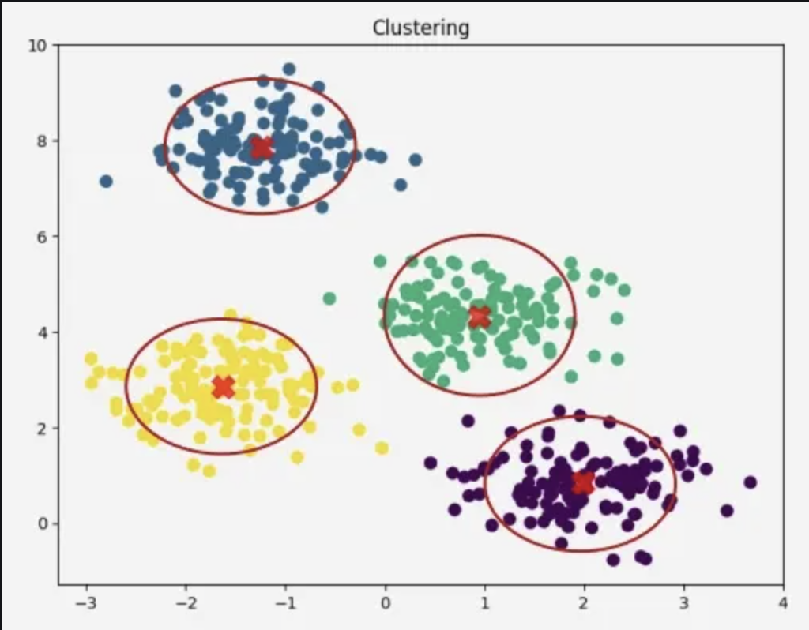
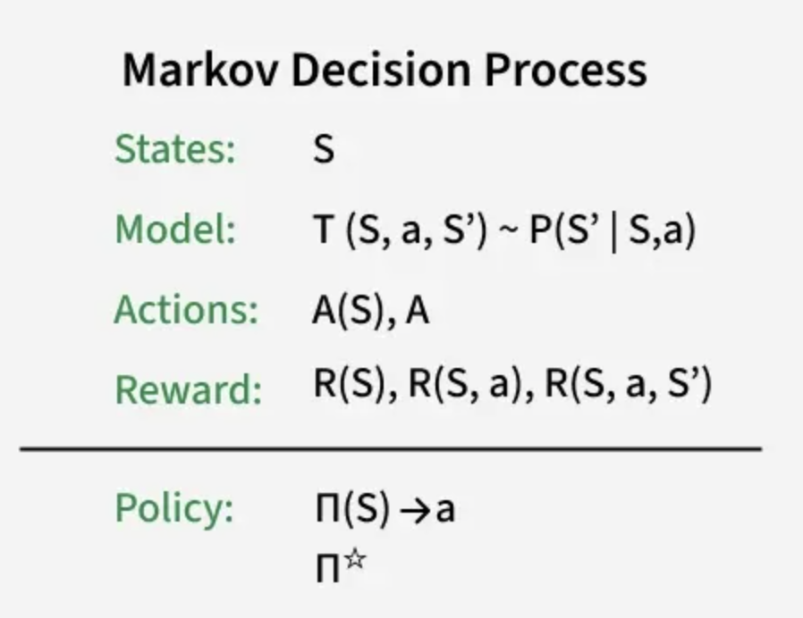

Supervised Learning - A type of machine learning where the model learns from labeled data and patterns. For example, Regression and Classification.
Unsupervised Learning - A type of machine learning where the model learns from unlabeled data and discovers patterns or groups on its own. For example, Clustering.
Reinforcement Learning - A type of machine learning where an agent learns by interacting with an environment, receiving rewards or penalties, and improving its decisions over time.
Regression in machine learning is a type of supervised learning that focuses on predicting continuous numerical values. It works by studying the relationship between a target variable, also called the dependent variable, and one or more input features, known as independent variables. The model learns how changes in the features influence the target, allowing it to make accurate predictions on new data. Regression is commonly used for tasks such as forecasting prices, estimating trends, and analyzing how different factors contribute to an outcome. It is one of the foundational techniques in machine learning because it helps reveal patterns in data and provides a way to understand and quantify relationships between variables.
In machine learning, classification is used to predict which category an input belongs to by learning from labeled data. In simpler terms, it is the process of teaching a computer to recognize patterns so it can place new information into the correct group. Features are the inputs or characteristics given to the model, while labels are the correct answers the model learns from in order to make predictions. For example, if we want a model to tell the difference between fake news and real news, the features might be the words in the article, and the labels would be “fake” or “real.”
Image Source: GeeksforGeeks
In machine learning, clustering is an unsupervised learning technique that uses group to gather similar datapoints together without using labeled data. Instead of learning from labeled examples, the model searches for natural patterns in the data and groups items into clusters where members of the same group are more similar to each other than to those in other groups. This approach helps uncover hidden patterns, organize large collections of data, and separate users based on their behavior, such as finding customers with similar interests or detecting common structures in images and text.
Image Source: GeeksforGeeks
A Markov Decision Process is a way to help a computer learn how to make decisions step by step, which is especially important in reinforcement learning. It looks at the current situation, called the state, and chooses an action that leads to the best possible future outcome. The key idea is that what happens next depends only on what is happening right now, not everything that happened before. By breaking a problem into states, actions, and the rewards it gets after each choice, the computer can slowly learn which decisions lead to better long-term results. Markov Decision Processes are used in many reinforcement learning tasks, like teaching a robot to move, helping an AI play games, or improving how apps make recommendations.
Image Source: GeeksforGeeks
Eileen T, 2025 Capstone Project